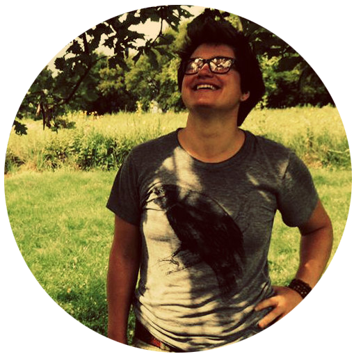

Calenday is a book of poems that you can read! I wrote it with my mind and my hands. It is mostly about blueprints, ghosts, parents & children, but it is also about data-syncing, animals showing love, the unseen world, sycamores…
I like to make multimedia events that combine photographs, video, animation, sound and text
Right now? The smaller month inside of this month.
Hi! I’m Lauren Haldeman.
I am the author of the poetry collections INSTEAD OF DYING (winner of the 2017 Colorado Prize for Poetry), CALENDAY (Rescue Press, 2014) and THE ECCENTRICITY IS ZERO (Digraph Press, 2014).
I work as the web developer, web designer and editor for this website, as well as several other websites, including the Writing University website at the University of Iowa and the Iowa Review. I received my M.F.A. from the Iowa Writers’ Workshop, and have been a finalist for the Walt Whitman award and National Poetry Series. Also: I’m a mom and make paintings.
